Partners and sponsors
The Veteran Games were made possible by UK veteran charities, charitable foundations, corporate sponsors and many anonymous donors.
UK veteran charity partners
Participants were referred to the Games by one of these charities.


Event sponsors
A special thanks to those who have kindly sponsored the Veteran Games programme since its establishment in 2019. We would also like to thank the many anonymous sponsors who have helped along the way.
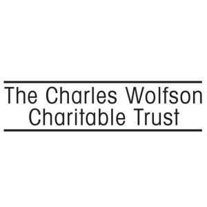
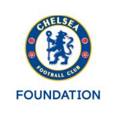
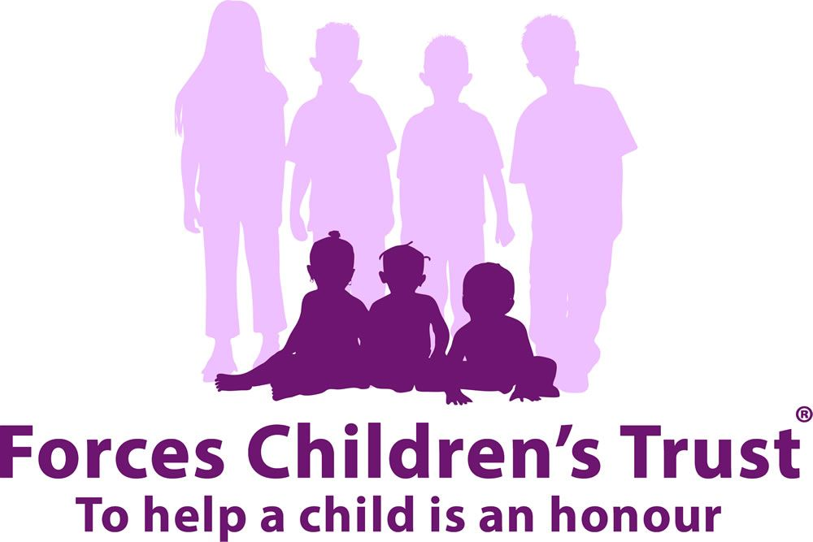
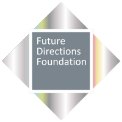
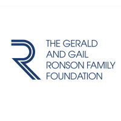
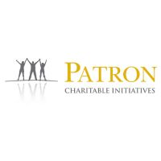
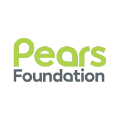
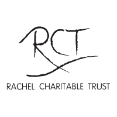
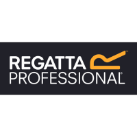
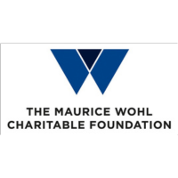
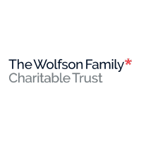
Community and corporate partners
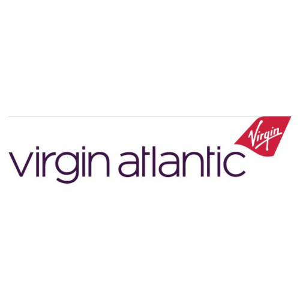
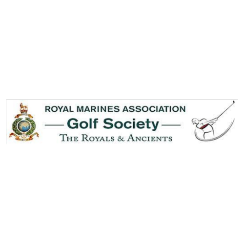
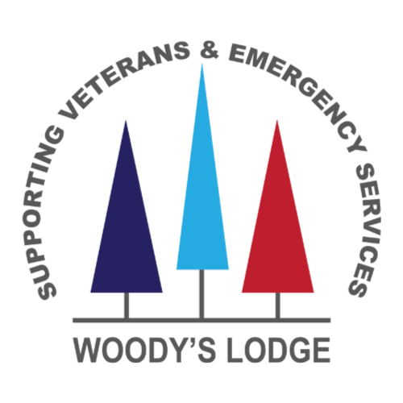
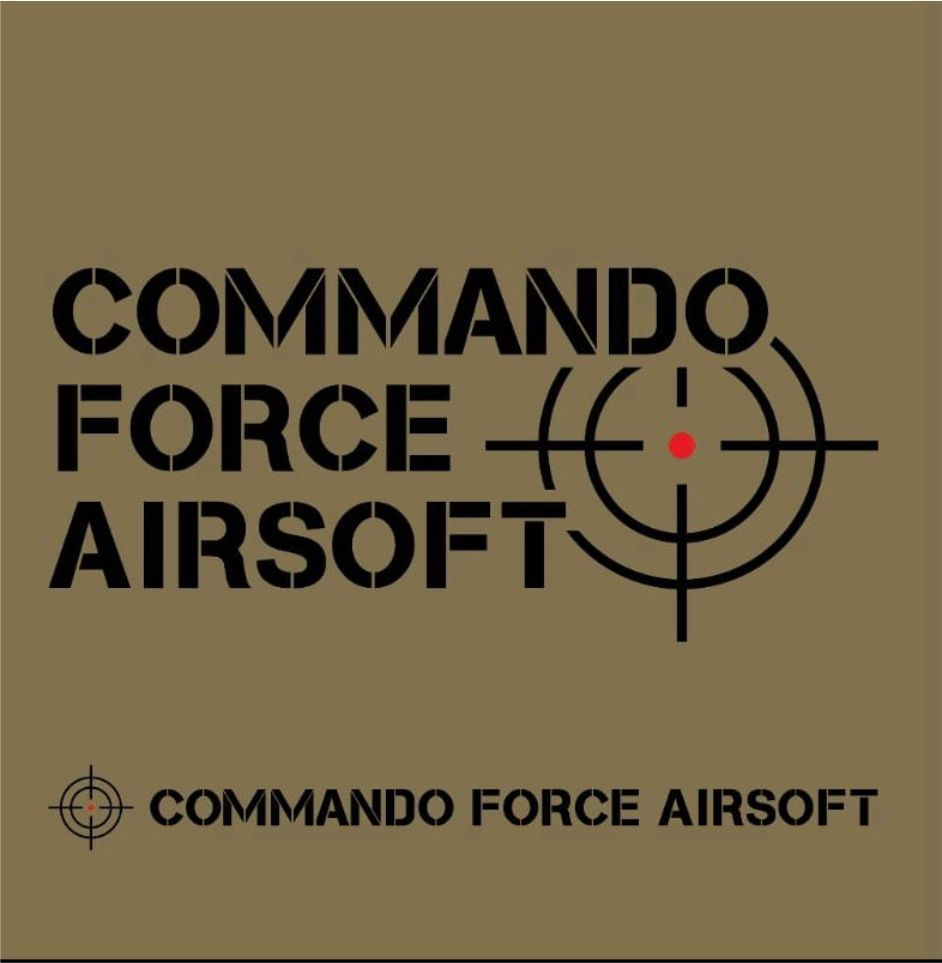